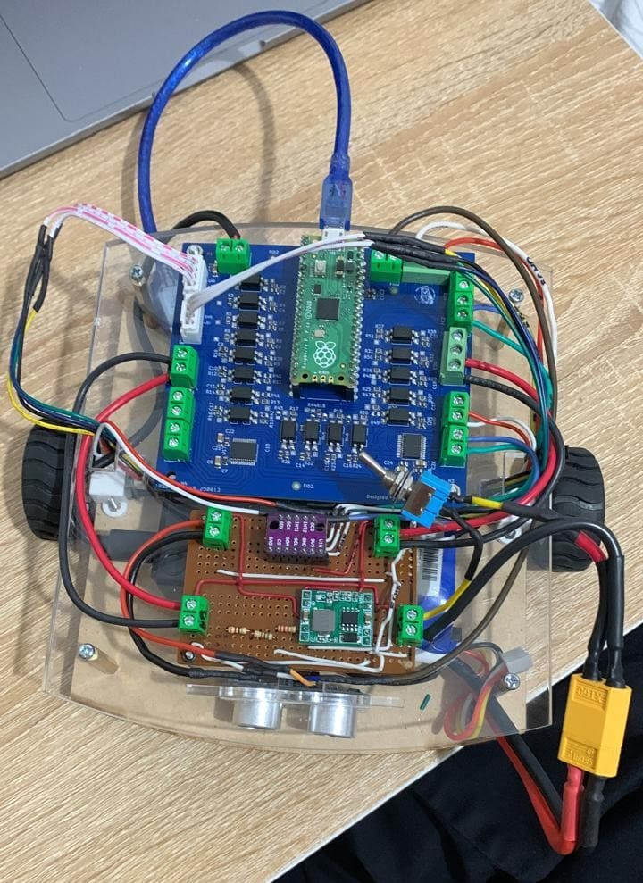

Differential Drive Robot
ROS2-Based Mobile Robot with Digital Twin, Embedded Control, and Autonomous Navigation

Project Details
Completed: November 2025
Project Overview
This project involved the design, manufacturing, programming, and testing of a fully functional differential drive mobile robot developed for robotics experimentation, autonomous navigation, and embedded control applications.
The platform combined mechanical design, embedded electronics, ROS2 integration, and real-time control into a compact robotic system capable of both teleoperation and autonomous trajectory execution.
A complete digital twin was also developed, enabling simulation, visualization, and system validation before deployment on the physical robot.
Mechanical Design
.png)
The robot was designed around a compact differential drive configuration using two DC motors with magnetic encoders and a passive rear caster wheel for stability.
The complete assembly was first modeled in CAD to optimize component placement, structural rigidity, and accessibility for maintenance.
The final chassis was manufactured using acrylic, MDF, and 3D-printed components, creating a lightweight yet robust platform suitable for continuous testing and experimentation.
The robot integrated:
- Differential drive wheel system
- Front ultrasonic sensor for obstacle detection
- Modular electronics mounting
- Centralized battery placement for improved balance
The final prototype successfully translated the original CAD concept into a reliable physical platform while maintaining a clean and modular mechanical layout.
Low-Level Control
The low-level control system was implemented on a Raspberry Pi Pico using Micro-ROS communication with ROS2.
Motor characterization and controller tuning were performed experimentally using MATLAB, allowing the implementation of closed-loop velocity control with encoder feedback.
The embedded controller regulated wheel speed in real time while publishing diagnostic and odometry-related data to ROS2 topics.
Key features included:
- PID-based motor velocity control
- Real-time encoder processing
- Wheel velocity estimation
- Closed-loop feedback regulation
The development process also involved troubleshooting motor saturation and instability issues, improving both controller robustness and system reliability.
Electronics
.png)
The embedded electronics architecture integrated sensing, motor control, and ROS2 communication into a compact mobile platform.
The system included:
- Raspberry Pi Pico running Micro-ROS
- Raspberry Pi 4 running ROS2
- Motor driver module
- Ultrasonic distance sensor
- IMU sensor for motion estimation
Sensors were integrated for obstacle detection and orientation measurement, while all electronics were mounted and soldered onto a dedicated prototyping board to improve reliability and cable management.
Communication between the embedded controller and ROS2 environment was achieved wirelessly, enabling distributed control and real-time data exchange between the robot and workstation.
High-Level Control & ROS2 Integration
The robot software architecture was developed entirely in ROS2 Humble.
A fully functional digital twin was implemented in RViz2, reproducing the robot's geometry, odometry, and motion behavior in real time.
The system supported both manual teleoperation and autonomous navigation through ROS2 nodes and Twist-based velocity commands.
Main software features included:
- Differential drive odometry
- Real-time TF and sensor visualization
- Teleoperation through ROS2
- Autonomous trajectory execution
- Pure Pursuit trajectory-following implementation
The project also integrated simulation and visualization tools to validate robot behavior before physical deployment, significantly accelerating testing and debugging workflows.
Testing & Validation
Extensive experimental testing was performed to validate motor control performance, odometry estimation, sensor integration, and autonomous navigation capabilities.
The robot demonstrated stable teleoperation, reliable velocity control, and accurate real-time visualization within RViz2.
Continuous testing and iterative refinement improved system robustness and overall trajectory tracking performance.
The final result was a versatile ROS2-based robotic platform capable of supporting future developments in autonomous navigation, embedded robotics, and mobile robot research.